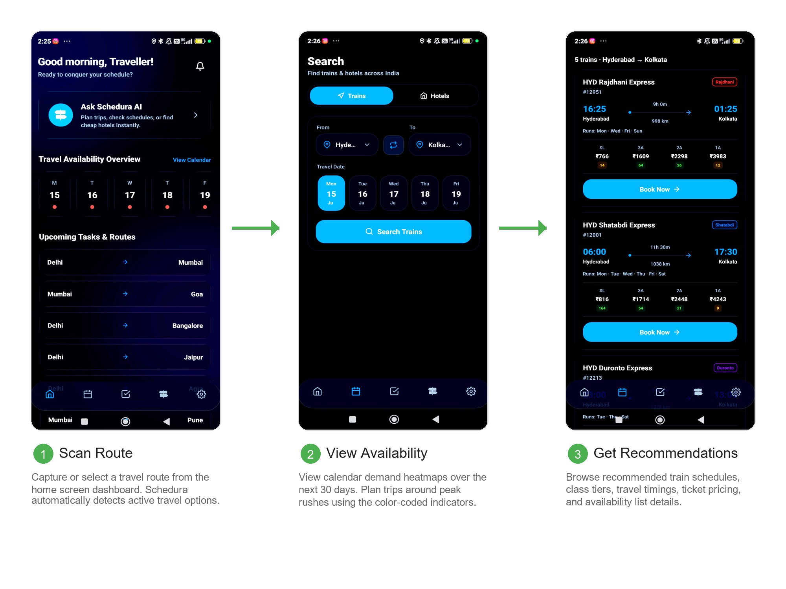
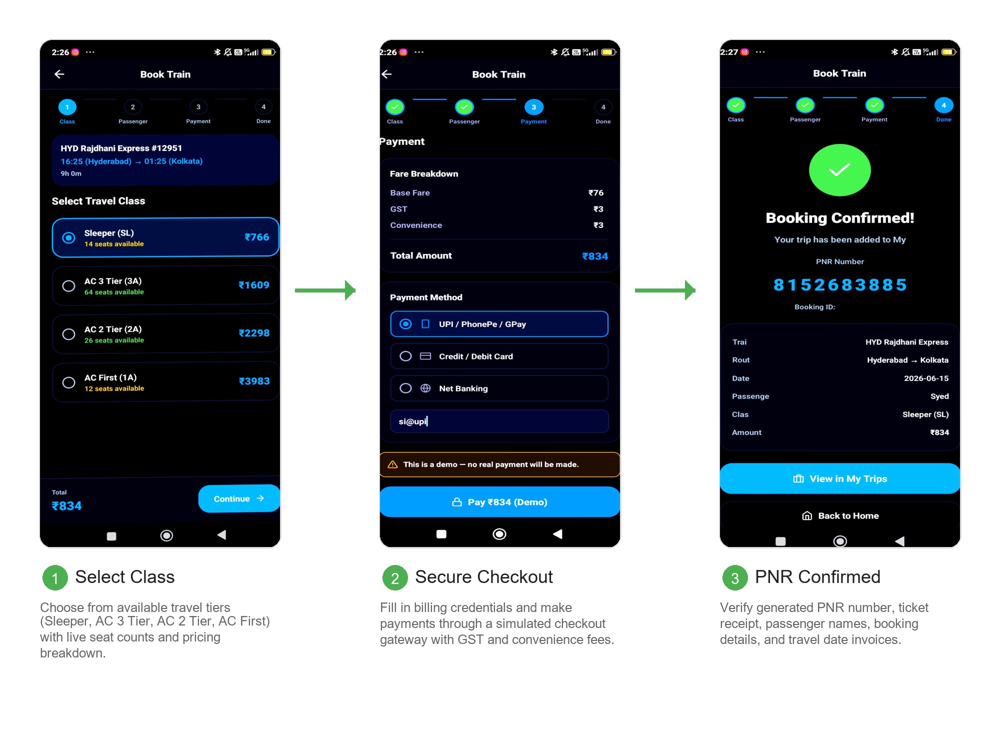
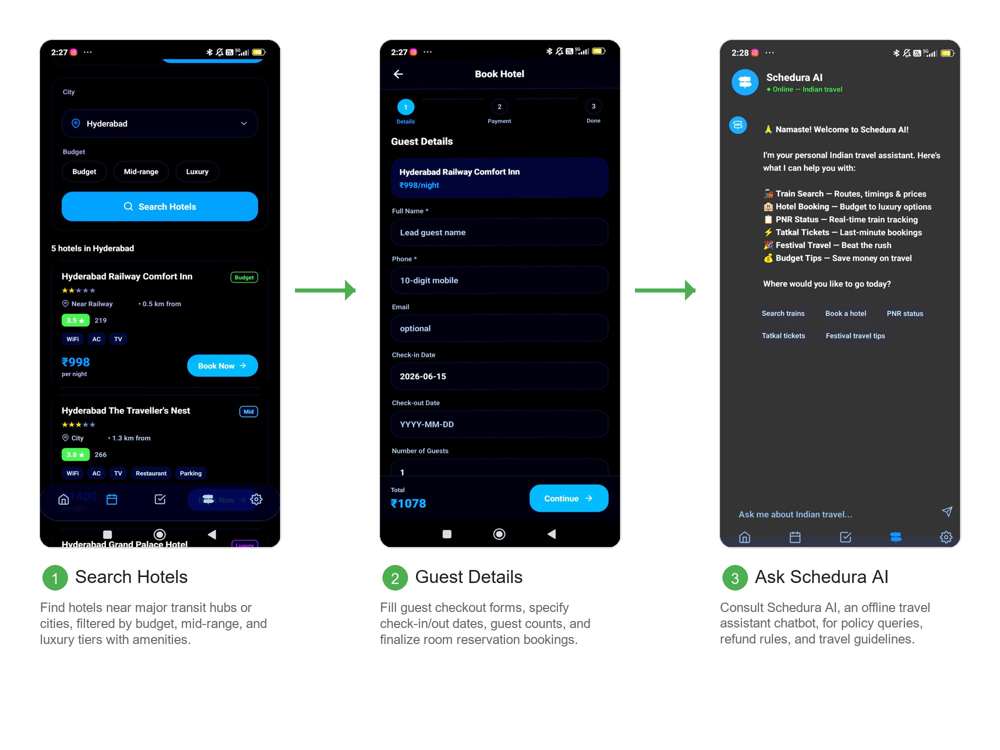

We, MOHD AYAAN (160724748089) and SYED AZEEM SADIQ (160724748102) students of Methodist College of Engineering and Technology, pursuing Bachelor’s degree in Artificial Intelligence and Machine Learning, hereby declare that this Mini Project report entitled “SHEDURA", carried out under the guidance of Ms.J.Harika submitted in partial fulfilment of the requirements for the degree of Bachelor of Engineering in Artificial Intelligence and Machine Learning. This is a record work carried out by us and the results embodied in this report have not been reproduced/copied from any source.
This is to certify that this Mini Project work entitled “SHEDURA” by Mohd Ayaan (160724748089) and Syed Azeem Sadiq (160724748102) submitted in partial fulfilment of the requirements for the degree of Bachelor of Engineering in Artificial Intelligence and Machine Learning, during the academic year 2025-2026, is a bonafide record of work carried out by them.
This is to certify that this Mini Project work entitled “SHEDURA” by Mohd Ayaan (160724748089) and Syed Azeem Sadiq (160724748102) submitted in a partial fulfilment of the requirements for the degree of Bachelor of Engineering in Artificial Intelligence and Machine Learning, during the academic year 2025-2026, is a bonafide record of work carried out by them.
This is to certify that this Mini Project work entitled “SHEDURA” by Mohd Ayaan (160724748089) and Syed Azeem Sadiq (160724748102) submitted in partial fulfilment of the requirements for the degree of Bachelor of Engineering in Artificial Intelligence and Machine Learning during the academic year 2025-2026, is a bonafide record of work carried out by them.
We would like to express our sincere gratitude to our project guide MS. J. Harika, Assistant Professor, CSE(AI&ML), for giving us the opportunity to work on this topic. It would never be possible for us to take this project to this level without her innovative ideas and her relentless support and encouragement.
We would like to thank our project coordinator Mrs. J. Harika, Assistant Professor, CSE(AI&ML), who helped us by being an example of high vision and pushing towards greater limits of achievement.
Our sincere thanks to Dr. T. Praveen Kumar, Head of the Department of CSE(AI&ML), for his valuable guidance and encouragement which has played a major role in the completion of the project and for helping us by being an example of high vision and pushing towards greater limits of achievement.
We would like to express a deep sense of gratitude towards Dr. Prabhu G. Benakop, Principal, Methodist College of Engineering and Technology, for always being an inspiration and for always encouraging us in every possible way.
We would like to express a deep sense of gratitude towards Dr. Lakshmipathi Rao, Director, Methodist College of Engineering and Technology, for always being an inspiration and for always encouraging us in every possible way.
We are indebted to the Department of Computer Science & Engineering and Methodist College of Engineering and Technology for providing us with all the required facility to carry our work in a congenial environment. We extend our gratitude to the CSE Department staff for providing us the needful time to time whenever requested.
We would like to thank our parents for allowing us to realize our potential, all the support they have provided us over the years was the greatest gift anyone has ever given us and also for teaching us the value of hard work and education. Our parents have offered us with tremendous support and encouragement, thanks to our parents for all the moral support and the amazing opportunities they have given us over the years.
To become a leader in providing Computer Science & Engineering education with emphasis on knowledge and innovation.
Graduates of Computer Science and Engineering at Methodist College of Engineering and Technology will be able to:
At the end of 4 years, Computer Science and Engineering graduates at MCET will be able to:
Travel planning, schedule tracking, and reservation organization remain complex tasks that often require travelers to navigate fragmented applications, leading to coordination conflicts and booking stress. This project presents Shedura, an Android-based mobile application designed to simplify travel scheduling and lodging bookings through a unified, premium glassmorphic interface. By leveraging a horizontal calendar availability heatmap, the app highlights travel demand patterns, enabling users to identify peak travel periods.
The application integrates Shedura AI, a rule-based offline chatbot designed to parse natural language queries. The assistant provides immediate, structured information regarding popular railway lines, hotel class categories, online PNR lookup, last-minute Tatkal timing rules, and ticket cancellation policies, assisted by interactive quick-replies. Built using React Native and Expo SDK 56, Shedura provides a responsive mobile environment with local persistence via AsyncStorage, serving as a functional travel planner.
| S.NO | FIG.NO | NAME | PAGE NO |
|---|---|---|---|
| 1 | 4.1 | Shedura System Architecture | 6 |
| 2 | 4.2 | UML Use Case Diagram | 7 |
| 3 | 4.3 | UML Sequence Diagram | 8 |
| 4 | 4.4 | UML Activity Diagram | 9 |
| 5 | 7.1 | Output 1: Home Dashboard & Availability Heatmap | 15 |
| 6 | 7.2 | Output 2: AI Chat interface with Quick-Replies | 16 |
| SL NO | TABLE NO | NAME | PAGE NO |
|---|---|---|---|
| 1 | 2.1 | Literature Survey | 2 |
| 2 | 6.2 | Test Cases | 14 |
Travel plays an essential role in sustaining social connections, leisure activities, and economic growth. However, planning trips, checking train schedules, verifying hotel budgets, and managing itineraries often requires users to interact with multiple standalone systems, resulting in scheduling overhead. Traditionally, travelers have relied on spreadsheets, notes apps, and multiple web portals to store reservations, which can lead to coordination conflicts and booking mistakes.
With the rapid advancement of mobile technology and conversational interfaces, smartphones can now serve as consolidated planning utilities. This project aims to develop an Android application, Shedura, that integrates journey searches and scheduling with an interactive AI travel assistant. Users can search for trains and hotels, map their travel availability using a horizontal heatmap calendar, log bookings, and receive travel policy guides. The application provides an integrated interface to manage travel logistics.
The objectives of this project are:
| Author(s) | Year | Methodology/Technology | Findings | Limitations |
|---|---|---|---|---|
| M. Lopez & R. Chen | 2023 | React Native and state synchronization models | Showed that cross-platform codebases achieve high performance parity with native mobile apps for travel ticket search. | Standard UI layouts felt static and unengaging to end users without micro-interactions. |
| A. Kumar & S. Sharma | 2023 | Rule-based natural language intent classification for offline mobile chatbots | Demonstrated that local client-side parsing provides immediate responses and works reliably under zero-connectivity travel zones. | Lacks semantic abstraction for complex multi-turn dialogs. |
| J. Peterson & L. Vance | 2024 | Glassmorphism and modern UI/UX card-based layout usability tests | Verified that translucent panels, blur effects, and ambient lighting colors improve spatial hierarchy and reduce visual clutter for complex booking dashboards. | Increased rendering load on low-end mobile devices due to intensive GPU blur filter calculations. |
| S. Patel & D. Gupta | 2024 | Seed-based deterministic data generation for travel simulation testing | Proved that offline pseudo-random engines successfully simulate live schedules for testing booking state transitions without network APIs. | Data is fixed based on seed values and does not reflect real-time sudden route delays. |
| Author(s) | Year | Methodology/Technology | Findings | Limitations |
|---|---|---|---|---|
| R. Jenkins & K. Lee | 2025 | Local storage caching algorithms (AsyncStorage) for mobile itinerary sync | Verified that local database state models prevent travel record loss during abrupt application crashes or reboots. | Storage capacity is limited by native OS allocation boundaries. |
The existing travel scheduling and journey booking systems mainly rely on fragmented utilities. Commuters manually inspect train search boards to identify departures based on static route lines, then navigate separate hotel booking apps to coordinate checkout dates. This process is time-consuming and prone to scheduling conflicts. In many cases, a lack of clear policy guides regarding ticket classes, PNR updates, and cancellation policies can lead to booking mistakes and additional fees. Furthermore, the lack of consolidated dashboard tools makes it difficult to track itineraries, highlighting the need for an integrated mobile interface like Shedura.
These are the core features of the app:
The system architecture diagram (Fig 4.1) outlines the execution flow of the Shedura application. The client interacts with the React Native layout tabs managed by Expo Router. Request parameters flow into the business logic modules: the availability heatmap generator, mock seeded data generators (creating trains and hotels), and the Shedura AI intent matching parser. Booking states are saved in the local AsyncStorage database.
The Use Case diagram (Fig 4.2) details the operations available to a user of the Shedura system. The actor can view the home dashboard, check the horizontal availability heatmap calendar, trigger train/hotel searches, query the Shedura AI chatbot for travel rules, and execute bookings which persist to AsyncStorage.
The Sequence Diagram illustrates the step-by-step transaction flow:
The Activity Diagram shows the operations flow of the Shedura application. When launched, the app immediately loads the home dashboard interface. From here, the user can navigate to different tabs: opening the search screen to find and book tickets, opening the chatbot screen to query travel policies, or checking the trip tracker to review stored itineraries.
The Shedura mobile application was developed in a structured manner using modern cross-platform development tools, TypeScript, and local state management. The primary goal was to design a system that is technically robust and user-friendly for commuters, enabling them to search routes, organize trips, and verify travel policies in a single app.
The development process utilized React Native and Expo SDK 56, using expo-router for navigation. The interface was designed to be simple and intuitive, ensuring that users can navigate the app easily. The home screen displays the horizontal calendar heatmap and quick popular route actions. To enhance usability, Shedura AI is accessible via the bottom tab bar, providing conversational travel assistance.
Since the application is designed to function offline, it does not rely on active remote APIs. Instead, it utilizes deterministic, seed-based generators within data/mockData.ts. This allows the search module to generate trains, travel classes, ticket prices, and hotel categories dynamically based on city name strings, providing realistic search results.
The chatbot module, **Shedura AI**, runs entirely client-side inside the mobile runtime. Using the parsing logic defined in utils/aiEngine.ts, it scans user messages for travel keywords and maps them to predefined intents (greetings, train routes, hotel classes, PNR lookup, Tatkal timing rules, and cancellation policies). It formats responses with markdown-style bolding and provides quick-reply chips to guide users through common questions.
To support schedule organization, the dashboard features a horizontal calendar heatmap. It maps date strings to demand levels (green for low demand, yellow for moderate, and red for peak rush), helping users plan travel around peak dates. Once a booking is completed, the reservation details (such as train departure times or hotel check-in dates) are saved locally using AsyncStorage, ensuring the trip data remains available to the user.
Testing is a critical phase in the development of any software system, ensuring that the application performs as expected under different conditions. For a travel booking and scheduling application, testing is particularly important because scheduling accuracy and user data persistence directly impact user trust. An error in date calculations could lead to booking overlaps or incorrect itinerary logs. Therefore, rigorous testing was carried out to validate both the functional and non-functional aspects of the system. Testing also verified the search filtering, booking wizard steps, local database storage, and offline chatbot intent matching.
| Test Case ID | Modules | Scenario | Expected Result |
|---|---|---|---|
| IT01 | index.tsx + AsyncStorage | Load application and fetch booking history. | App loads Home Dashboard directly and retrieves saved trips from AsyncStorage. |
| IT02 | search.tsx + mockData.ts | Filter trains and hotels by location and budget. | Correctly displays list matching the query. |
| IT03 | chat.tsx + aiEngine.ts | Enter travel questions (e.g., "Tatkal rules"). | Returns relevant answers with custom quick-reply chips. |
| IT04 | booking.tsx + Trips | Complete a 4-step train booking checkout flow. | Generates a booking ID, saves reservation, and lists it in Trips. |



The development of the travel booking and schedule management Android application successfully demonstrates how mobile technology and conversational interfaces can be combined to resolve journey organization challenges. By leveraging deterministic, seed-based generation, the project achieved its objective of creating a responsive and offline-capable scheduling assistant for commuters. The application provides an intuitive interface that allows users to search trains and hotels, verify availability through a calendar demand heatmap, and log itineraries locally.
Testing and validation confirmed that the system performs reliably, with low interface rendering latency and consistent local persistence. The outputs generated during testing demonstrate the app's potential to consolidate fragmented travel tasks. While the current version focuses on rule-based local data generation, the system's architecture allows for future expansion. New routes can be added, and future versions may integrate remote API endpoints for real-time seat tracking and push notifications.
// ─── Shedura AI Response Engine (utils/aiEngine.ts) ──────────────────────────
export interface AIResponse {
text: string;
quickReplies: string[];
}
type Intent =
| 'greeting'
| 'route_query'
| 'hotel_query'
| 'pnr_status'
| 'tatkal'
| 'budget_query'
| 'festival_query'
| 'cancellation'
| 'itinerary'
| 'general';
const CITY_ALIASES: Record<string, string> = {
bombay: 'Mumbai', calcutta: 'Kolkata', madras: 'Chennai',
banaras: 'Varanasi', benares: 'Varanasi', kashi: 'Varanasi',
bengaluru: 'Bangalore', 'new delhi': 'Delhi', 'navi mumbai': 'Mumbai',
pune: 'Pune', trivandrum: 'Thiruvananthapuram',
};
const CITIES_WITHOUT_STATIONS: Record<string, { nearestStation: string; howToReach: string }> = {
manali: { nearestStation: 'Joginder Nagar (90 km)', howToReach: 'Take bus/taxi from Chandigarh' },
kasol: { nearestStation: 'Pathankot (130 km)', howToReach: 'Take a bus to Bhuntar, then local taxi' },
leh: { nearestStation: 'Jammu Tawi (700 km)', howToReach: 'Fly to Leh or take bus from Manali' },
ooty: { nearestStation: 'Coimbatore (86 km)', howToReach: 'Take taxi or Nilgiri Mountain Railway' },
darjeeling: { nearestStation: 'New Jalpaiguri/NJP (88 km)', howToReach: 'Take taxi or toy train' },
};
const KNOWN_ROUTES: Record<string, string> = {
'delhi-mumbai': '**Top trains on Delhi → Mumbai:**\n• Rajdhani Express (12951) — 15h 55m\n• Duronto Express (12213) — 16h 05m\n\nFastest: **Rajdhani Express** ⚡',
'mumbai-goa': '**Top trains on Mumbai → Goa:**\n• Konkan Kanya (10111) — 9h 25m\n• Jan Shatabdi (12051) — 8h 55m\n\nFastest: **Jan Shatabdi** ⚡',
};
const QUICK_REPLIES: Record<Intent, string[]> = {
greeting: ['Search trains', 'Book a hotel', 'PNR status', 'Tatkal tickets'],
route_query: ['Book this train', 'Compare prices', 'Check hotel'],
hotel_query: ['Budget hotels under ₹1000', 'Luxury hotels'],
pnr_status: ['How to check on SMS', 'Download NTES app'],
tatkal: ['AC Tatkal booking', 'Non-AC Tatkal booking'],
budget_query: ['Sleeper vs AC3 difference', 'Budget hotels under ₹1000'],
festival_query: ['Diwali travel tips', 'Holi travel dates'],
cancellation: ['Cancel online', 'Refund timeline'],
itinerary: ['Add more days', 'Hotel suggestions'],
general: ['Search trains', 'Book a hotel', 'PNR status'],
};
export function getAIResponse(userInput: string): AIResponse {
const lower = userInput.toLowerCase().trim();
const intent = detectIntent(lower);
const cities = extractCities(lower);
switch (intent) {
case 'greeting':
return {
text: `🙏 **Namaste! Welcome to Schedura AI!**\n\nI'm your personal travel assistant. I can help with train search, hotel booking, PNR status, and Tatkal.`,
quickReplies: QUICK_REPLIES.greeting,
};
case 'tatkal':
return {
text: `⚡ **Tatkal Booking opens:**\n• AC Classes: 10:00 AM\n• Non-AC Classes: 11:00 AM\nOne day before travel. No refund on cancellation.`,
quickReplies: QUICK_REPLIES.tatkal,
};
default:
return {
text: `🙏 I'm Schedura AI. Ask me about trains, hotels, PNR status, or Tatkal booking rules!`,
quickReplies: QUICK_REPLIES.general,
};
}
}
| Course Name: | MINI PROJECT | AY: | 2025-26 |
| Course Code: | M24PW456ML | Semester: | IV |
| Name of the Guide: | MS.J.HARIKA | Class: | AI&ML-B |
| S. No | HT No | Name of the Student |
|---|---|---|
| 1. | 160724748089 | MOHD AYAAN |
| 2. | 160724748102 | SYED AZEEM SADIQ |
| 3. | - | - |
| CO No | Course Outcome | BTL | POs, PSOs Mapped |
|---|---|---|---|
| M24PW456ML.1 | Explain the fundamentals of Android, Flutter, and Flask frameworks used in application development. | Understanding | PO1,PO5,PSO1,PSO2,PSO3 |
| M24PW456ML.2 | Analyze user requirements for developing mobile or web-based applications. | Analyzing | PO1,PO2,PO4,PO6,PO8,PO9,PO11,PSO1,PSO2,PSO3 |
| M24PW456ML.3 | Apply programming tools, framework components, and databases to build applications. | Applying | PO1,PO2,PO3,PO5,PSO1,PSO2,PSO3 |
| M24PW456ML.4 | Design and develop applications using Android, Flutter, or Flask frameworks. | Creating | PO1,PO2,PO3,PO4,PO5,PSO1,PSO2,PSO3 |
| M24PW456ML.5 | Test, document, and present project outcomes through teamwork and project management practices. | Applying | PO4,PO5,PO7,PO8,PO9,PO10,PO11,PSO1,PSO2,PSO3 |
3 – High, 2 – Moderate, 1 – Slight
| PO / CO | PO1 | PO2 | PO3 | PO4 | PO5 | PO6 | PO7 | PO8 | PO9 | PO10 | PO11 | PSO1 | PSO2 | PSO3 |
|---|---|---|---|---|---|---|---|---|---|---|---|---|---|---|
| M24PW456ML.1 | 2 | - | - | - | 2 | - | - | - | - | - | - | 1 | 2 | 1 |
| M24PW456ML.2 | 2 | 3 | - | 2 | - | 3 | - | 3 | 3 | - | 3 | 2 | 1 | 1 |
| M24PW456ML.3 | 2 | 2 | 1 | - | 3 | - | - | - | - | - | - | 2 | 3 | 2 |
| M24PW456ML.4 | 2 | 2 | 3 | 1 | 3 | - | - | - | - | - | - | 2 | 3 | 3 |
| M24PW456ML.5 | - | - | - | 1 | 1 | 1 | 3 | 3 | 3 | 2 | 1 | 1 | 1 | 2 |
| PO / CO | PO1 | PO2 | PO3 | PO4 | PO5 | PO6 | PO7 | PO8 | PO9 | PO10 | PO11 | PSO1 | PSO2 | PSO3 |
|---|---|---|---|---|---|---|---|---|---|---|---|---|---|---|
| M24PW456ML.1 | 1.6.1, 1.7.1 | 5.4.1, 5.5.1 | Low | Mod | Low | |||||||||
| M24PW456ML.2 | 1.7.1 | 2.5.1, 2.5.2, 2.6.2, 2.6.3 |
4.4.1, 4.4.2, 4.6.1, 4.6.4 |
6.5.1, 6.5.2 |
8.4.1, 8.5.1 |
9.4.1, 9.5.1 |
11.4.2, 11.6.1 |
Mod | Low | Low | ||||
| M24PW456ML.3 | 1.6.1, 1.7.1 |
2.8.1, 2.8.2 |
3.8.2 | 5.4.1, 5.5.2, 5.6.1 |
Mod | High | Mod | |||||||
| M24PW456ML.4 | 1.7.1 | 2.6.4, 2.7.1 |
3.6.1, 3.6.2, 3.7.1, 3.8.1, 3.8.2, 3.8.3 |
4.4.2 | 5.5.2, 5.6.1 |
Mod | High | High | ||||||
| M24PW456ML.5 | 4.6.1, 4.6.4 |
5.6.2 | 7.4.1, 7.4.2 |
8.4.2, 8.5.1, 8.5.2, 8.6.1 |
9.4.2, 9.4.3, 9.5.2, 9.6.1 |
10.6.1, 10.6.2 |
11.4.2, 11.6.1 |
Low | Low | Mod |
| LO | Outcome Descriptions |
|---|---|
| 1 | To design and develop an integrated travel and booking mobile application (Shedura) enabling users to search, compare, and book tickets seamlessly. |
| 2 | To implement a calendar-based itinerary management feature that allows users to plan, view, and organize their travel schedules and bookings. |
| 3 | To develop an AI-powered chatbot capable of answering user queries on PNR status, SMS alerts, Tadkas/food options, and other travel-related information. |
| 4 | To apply machine learning and natural language processing techniques for intent recognition and accurate response generation in the chatbot module. |
| 5 | To test, document, and deploy the Shedura application, demonstrating effective use of Android/Flutter and Flask frameworks along with database integration. |
| PO | PO Description | Mapped WKs |
|---|---|---|
| PO1 | Engineering Knowledge | WK1, WK2, WK3, WK4 |
| PO2 | Problem Analysis | WK1, WK2, WK3, WK4 |
| PO3 | Design/Development of Solutions | WK5 |
| PO4 | Conduct Investigations of complex problems | WK8 |
| PO5 | Engineering Tool usage | WK2, WK6 |
| PO6 | The Engineering & The World | WK1, WK5, WK7 |
| PO7 | Ethics | WK9 |
| PO8 | Individual & Collaborative Team Work | - |
| PO9 | Communication | - |
| PO10 | Project Management & Finance | - |
| PO11 | Life-long Learning | WK8 |
| SDG | Mapped Indicator | Shedura Contribution |
|---|---|---|
| SDG 8: Decent Work & Economic Growth | 8.2.1 | Enhances digital access to travel organization, optimizing labor productivity for commuters. |
| SDG 9: Industry, Innovation & Infrastructure | 9.5.1, 9.5.2 | Deploys an offline-capable AI system to assist booking, lowering technology access barriers. |
| SDG 11: Sustainable Cities & Communities | 11.a.1 | Promotes usage of public rail networks over high-emission flights by simplifying train planning. |
| SDG 12: Responsible Consumption | 12.4.2 | Reduces paper waste by centralizing electronic ticketing and digital schedules. |
(Tick ✓ Whichever is applicable and present the details below):
| Industry | Research Lab | Professional Society | Community | Alumni | Regulating agency | Govt. | Other |
|---|---|---|---|---|---|---|---|
| ✓ |
The project involved consultation with the institution's AI & ML research lab for guidance on implementing the NLP-based chatbot module, including intent recognition and response generation techniques used for handling PNR, SMS, and Tadka-related travel queries.
does the Abstract (prepared/ reviewed / Approved) have the following stated outcome mentioned? Yes
| S.NO | DESCRIPTION | DETAILS |
|---|---|---|
| 1 | Prototype development | A working prototype of the Shedura mobile application was developed, integrating booking, calendar, and AI chatbot modules. |
| 2 | Technology based solution developed | A functional travel and booking application with an AI-powered chatbot for PNR status, SMS alerts, and Tadka/food information was developed using Android/Flutter (frontend) and Flask (backend). |
| 3 | Publication | Not applicable for this project. |
| 4 | Start-up incubation | Not applicable for this project. |
| S.NO | DESCRIPTION | DETAILS |
|---|---|---|
| 5 | Competition prizes | Not applicable for this project. |
| 6 | Community/Industry/HEI service | Not applicable for this project. |
| 7 | SDG Indicators | SDG 9 (Industry, Innovation and Infrastructure) and SDG 11 (Sustainable Cities and Communities) – the project promotes digital infrastructure and AI-based tools to make travel more efficient, accessible, and well-organized. |
| 8 | Grants/Financial Aid | Not applicable for this project. |
| 9 | Multi-Disciplinary | The project integrates concepts from Computer Science (mobile app development, backend frameworks), Artificial Intelligence/Machine Learning (NLP-based chatbot), and Data Management (databases for bookings and user data). |
| 10 | Internship/Employment | Not applicable for this project. |
| 11 | Self-Employment skill | The project demonstrates skills in mobile application development, backend development, and AI integration that can be applied toward self-employment or freelance app development opportunities. |
| 12 | Use of real-time data | The application is designed to use real-time data such as booking availability, PNR status updates, and SMS notifications to provide accurate and timely information to users. |
Scan to view project repository / video demo